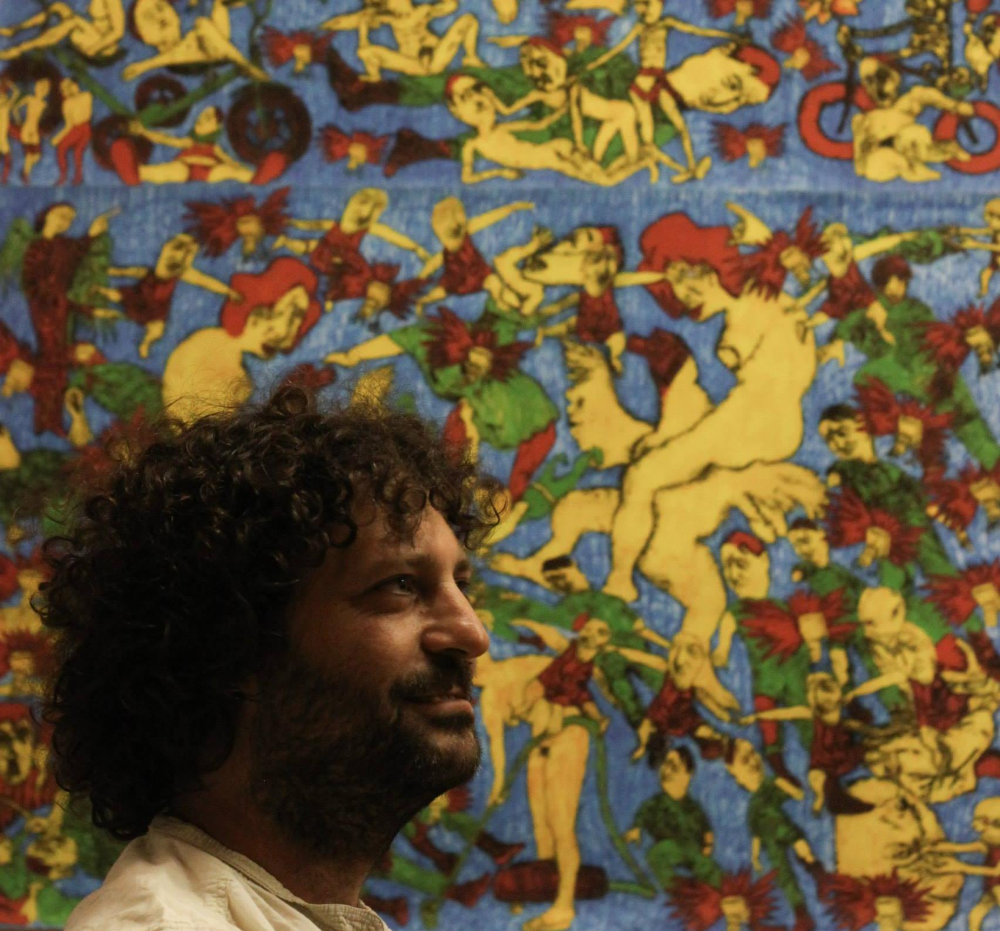

Who we are
People

Barak SoberPrincipal InvestigatorSenior Lecturer, Statistics & Data Science
HC
Hanan CohenLab Manager
Current members
SM
Shir MoshePhD Student
DO
David OrielMSc Studentsince 2024
YB
Yarin BenizriMSc Studentsince 2025 · co-advised w/ Gabi Stanowsky
Former members
- Gideon Yoffe PhD Postdoctoral fellow, Weizmann Institute (Kaspi group)
- Ariel Vishne MSc Graduated on February 2025
- Yishay Shor MSc Graduated on February 2025
- Ron Taieb MSc PhD student, Tel Aviv University
- Nachman Keren MSc Graduated on December 2025